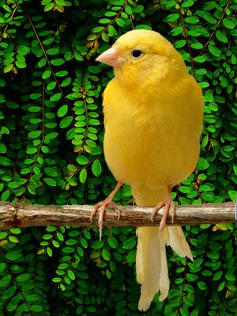
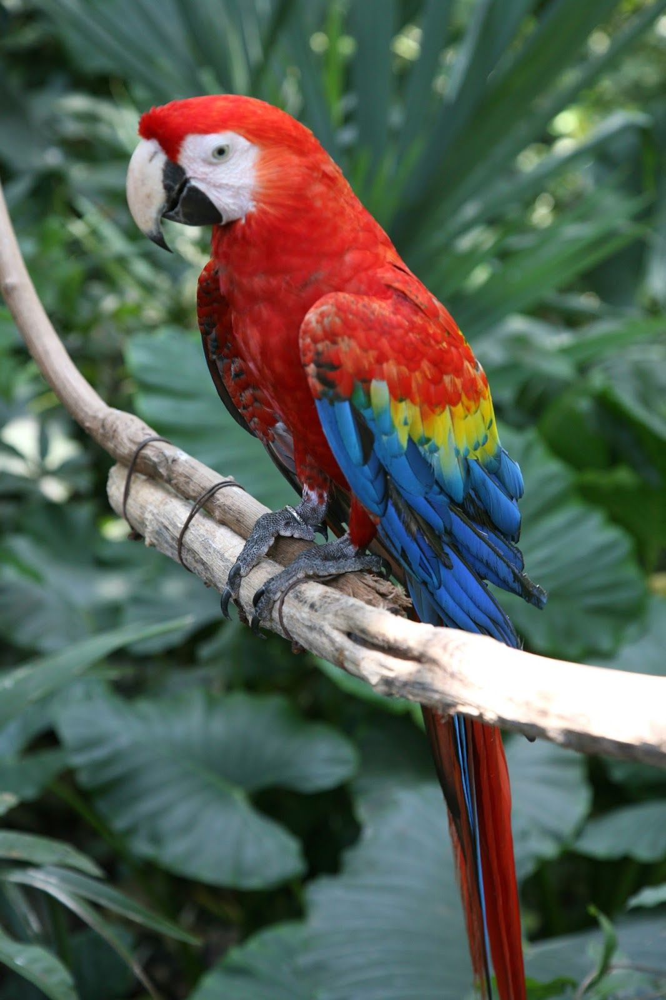
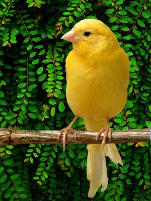
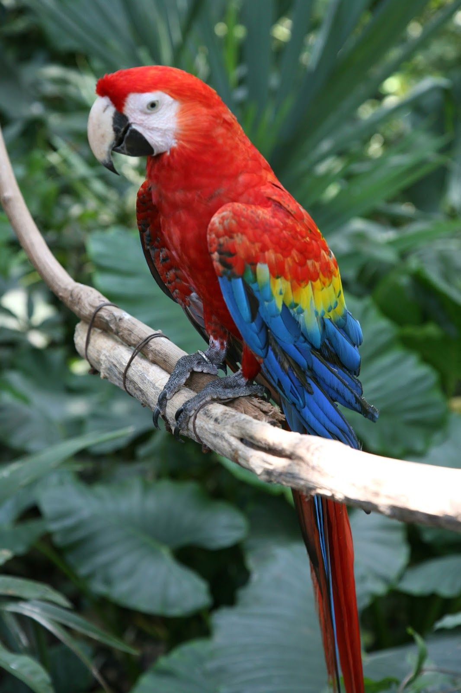

Breed Feral Pigeon

Feral pigeons (Columba livia domestica), also called city doves, city pigeons, or street pigeons are pigeons that are descended from the domestic pigeons that have returned to the wild. The domestic pigeon was originally bred from the wild rock dove, which naturally inhabits sea-cliffs and mountains. Rock (i.e., "wild"), domestic, and feral pigeons are all the same species and will readily interbreed. Feral pigeons find the ledges of buildings to be a substitute for sea cliffs, have become adapted to urban life, and are abundant in towns and cities throughout much of the world.
Born: September 23, 2019
Breeder: Salmaan Khan
Weight: 6 kilogram
Gender: Female
 Add to favourites
Add to favourites
 


